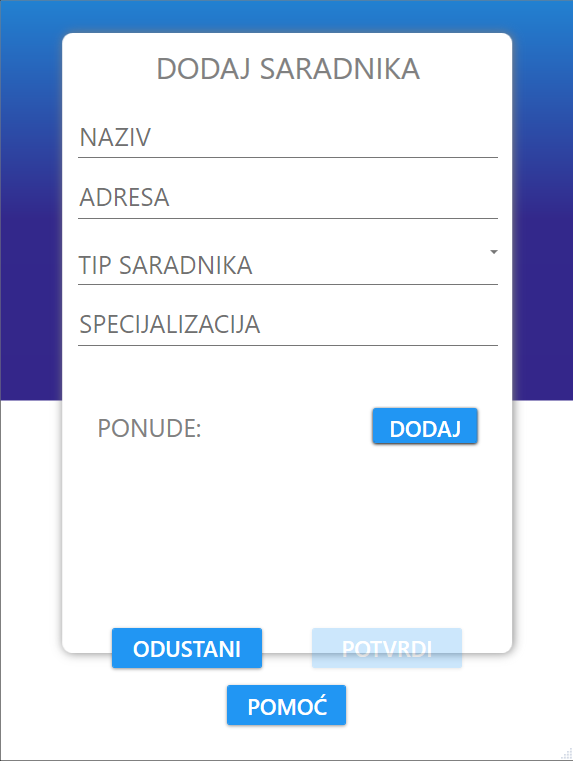
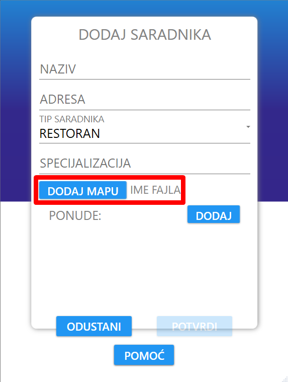
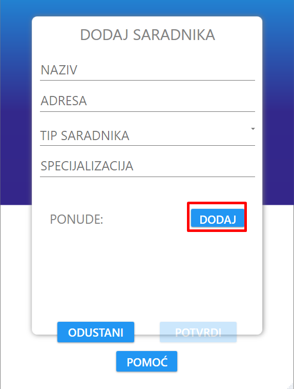
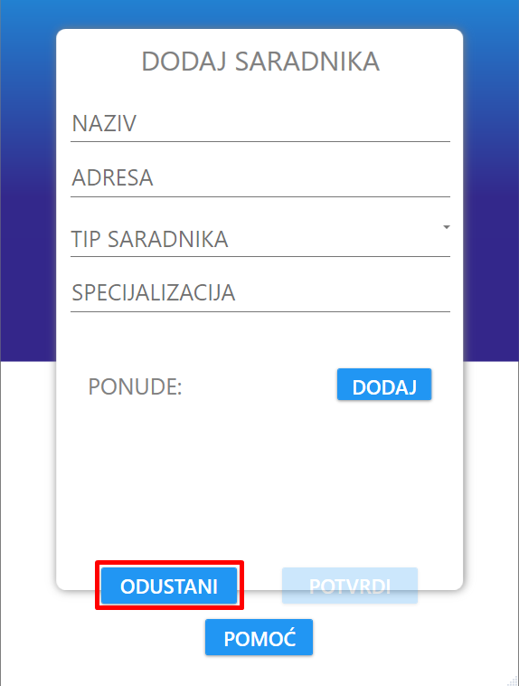
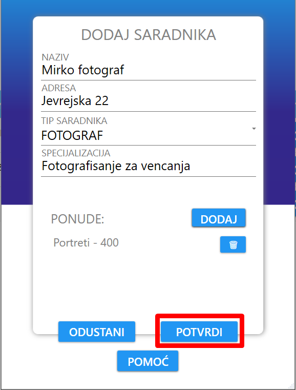
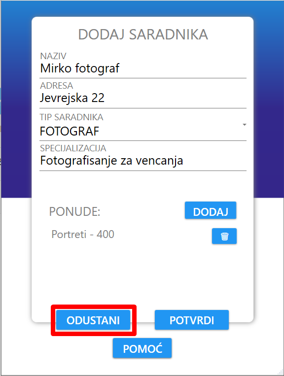

Nakon klika na dugme "Dodaj", korisniku se otvara novi prozor sa formom za registraciju saradnika.
Forma redom sadrži polja za naziv, adresu, tip, specijalizaciju i ponude.
Ukoliko je se dodaje saradnik čiji je tip restoran, onda postoji i polje za dodavanje mape za dati restoran.
Admin moze da dodaje ponude za saradnika klikom na dugme "DODAJ" pored labele "PONUDE:"
Klikom na dugme odustani, korisniku se zatvara prozor za dodavanje saradnika i proces se zaustavlja.
Nakon što je korisnik popunio sva polja, on može da registruje saradnika klikom na dugme "POTVRDI".
Ukoliko je korisnik odustao od registracije, klikom na dugme "ODUSTANI" prekida se proces registrovanja i prozor se zatvara.
